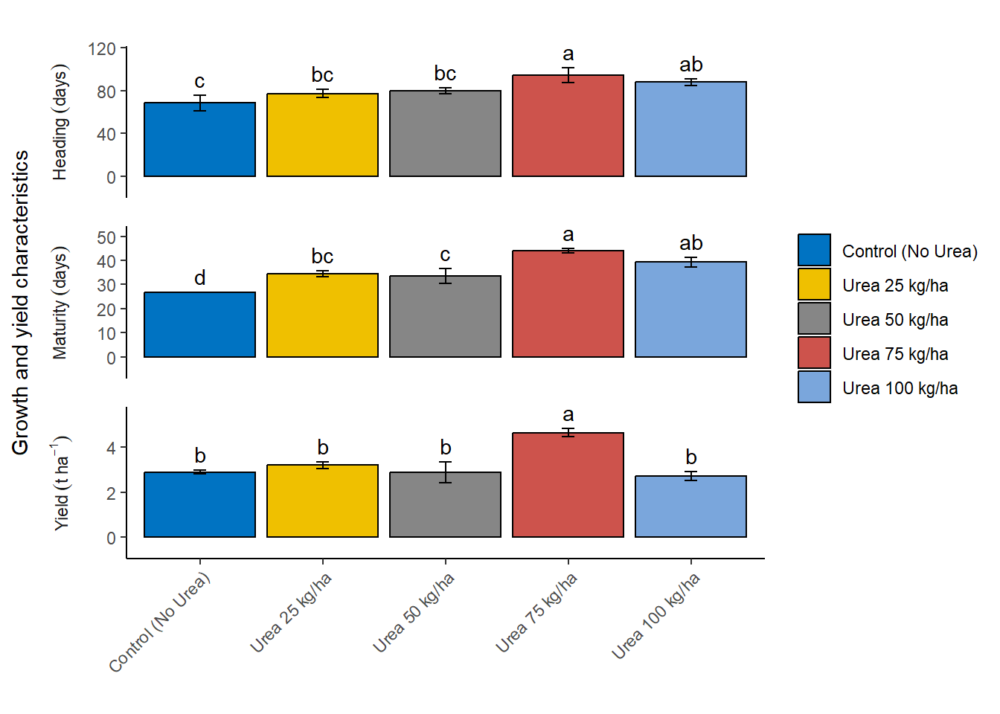

library(ggplot2)
library(dplyr)
library(tidyr)
library(agricolae)
library(reshape2)
library(readxl)Interaction bar plots with standard error and lettering in R
123
Second Tag
Interraction bar plot in R
Introduction
In this blog post, we will go through the steps of quickly creating multiple bar plots with standard error and lettering using R. We will perform an Analysis of Variance (ANOVA) and a Least Significant Difference (LSD) test to understand the effects of different nitrogen (N) rates on rice. Finally, we will create visualizations to present the results. Let’s dive in!
Load Necessary Libraries
We begin by loading the required libraries. These libraries will help us with data manipulation, statistical analysis, and visualization.
Import the Data Set
Next, we import the dataset from an Excel file named “data_rice.xlsx”. We display the first few rows and the column names to understand the structure of the data.
df <- read_excel(path = "data/data_rice.xlsx", col_names = TRUE)
head(df)# A tibble: 6 × 5
rep Nrate Heading Maturity Yield
<dbl> <chr> <dbl> <dbl> <dbl>
1 1 Control (No Urea) 54.2 26.5 2.88
2 2 Control (No Urea) 78.3 27.0 3.03
3 3 Control (No Urea) 72.7 26.7 2.76
4 1 Urea 25 kg/ha 72.5 36.6 3.48
5 2 Urea 25 kg/ha 84.3 32.1 3.17
6 3 Urea 25 kg/ha 75.3 34.8 2.93names(df)[1] "rep" "Nrate" "Heading" "Maturity" "Yield" Convert Variables to Factors
We convert the columns rep and Nrate to factors because they represent categorical variables in our analysis. I will make use of the across function from dplyr
df <- df %>%
mutate(across(.cols=c(1:2),.fns=factor))View the new structure of the data
str(df)tibble [15 × 5] (S3: tbl_df/tbl/data.frame)
$ rep : Factor w/ 3 levels "1","2","3": 1 2 3 1 2 3 1 2 3 1 ...
$ Nrate : Factor w/ 5 levels "Control (No Urea)",..: 1 1 1 3 3 3 4 4 4 5 ...
$ Heading : num [1:15] 54.2 78.3 72.7 72.5 84.3 ...
$ Maturity: num [1:15] 26.5 27 26.7 36.6 32.1 ...
$ Yield : num [1:15] 2.88 3.03 2.76 3.48 3.17 ...Define Response Variables
We define response_vars as all columns from the third to the last column in the dataset. These columns represent different growth and yield characteristics.
response_vars <- colnames(df)[3:ncol(df)]Analysis of Variance (ANOVA)
We are performing ANOVA (Analysis of Variance) for multiple response variables stored in a list called response_vars. We first initialize an empty list called anova_result to store the ANOVA results for each response variable. The code then iterates over each response variable in response_vars. If a response variable contains a space in its name, it is wrapped in backticks to ensure it is correctly interpreted within the formula.
A formula is then dynamically constructed for each response variable, where the response variable is modeled as a function of two factors: “rep” and “Nrate”. This formula is passed to the aov function, which performs the ANOVA using the data frame df. The resulting ANOVA object is stored in the anova_result list, with the response variable name as the key. For each response variable, the code prints a message indicating that ANOVA is being performed, followed by the summary of the ANOVA results. This process allows us to systematically conduct and review ANOVA for multiple response variables in a dataset.
anova_result <- list()
for (i in response_vars) {
if(grepl(" ", i)) {
i <- paste0("`", i, "`")
}
formula <- as.formula(paste(i, "~", "rep", "+", "Nrate"))
anova_result[[i]] <- aov(formula, data = df)
print(paste("ANOVA for", i))
print(summary(anova_result[[i]]))
}[1] "ANOVA for Heading"
Df Sum Sq Mean Sq F value Pr(>F)
rep 2 345.8 172.88 3.147 0.0981 .
Nrate 4 1211.6 302.90 5.514 0.0198 *
Residuals 8 439.5 54.94
---
Signif. codes: 0 '***' 0.001 '**' 0.01 '*' 0.05 '.' 0.1 ' ' 1
[1] "ANOVA for Maturity"
Df Sum Sq Mean Sq F value Pr(>F)
rep 2 26.2 13.08 1.456 0.28879
Nrate 4 507.3 126.82 14.126 0.00107 **
Residuals 8 71.8 8.98
---
Signif. codes: 0 '***' 0.001 '**' 0.01 '*' 0.05 '.' 0.1 ' ' 1
[1] "ANOVA for Yield"
Df Sum Sq Mean Sq F value Pr(>F)
rep 2 0.160 0.0802 0.377 0.69737
Nrate 4 7.487 1.8716 8.801 0.00501 **
Residuals 8 1.701 0.2127
---
Signif. codes: 0 '***' 0.001 '**' 0.01 '*' 0.05 '.' 0.1 ' ' 1Least Significant Difference (LSD) Test
Then we conducted post-hoc analysis using the Least Significant Difference (LSD) test for multiple response variables stored in response_vars. We first initialize an empty list called lsd_result to store the LSD test results for each response variable. The code iterates over each response variable in response_vars, and if a variable’s name contains a space, it is enclosed in backticks to ensure it is correctly processed. For each response variable, the LSD test is performed using the corresponding ANOVA result from the previously stored anova_result list, focusing on the treatment factor “Nrate” with a significance level (alpha) of 0.05. The test results, including means and groups, are then merged into a single data frame.
The standard error (SE) for each response variable is calculated by dividing the standard deviation by the square root of the number of replicates. The resulting data frame is stored in the lsd_result list, with each data frame’s column containing the response variable values, means, groups, and standard errors. The column name for the response variable is standardized to “response”. Finally, the results for each response variable are printed. This process ensures a detailed post-hoc analysis following ANOVA, allowing for a clear comparison of treatment means.
lsd_result <- list()
for (i in response_vars) {
if(grepl(" ", i)) {
i <- paste0("`", i, "`")
}
lsd_result[[i]] <- LSD.test(anova_result[[i]], trt = "Nrate", alpha = 0.05)
lsd_result[[i]] <- merge(x = lsd_result[[i]]$means[1:3], y = lsd_result[[i]]$groups[2], by.x = "row.names", by.y = "row.names", all.x = FALSE)
lsd_result[[i]]$SE <- lsd_result[[i]]$std / sqrt(lsd_result[[i]]$r)
lsd_result[[i]] <- data.frame(lsd_result[[i]])
colnames(lsd_result[[i]])[2] <- "response"
print(lsd_result[[i]])
} Row.names response std r groups SE
1 Control (No Urea) 68.44509 12.609047 3 c 7.279837
2 Urea 100 kg/ha 87.97074 5.763612 3 ab 3.327623
3 Urea 25 kg/ha 77.39595 6.182959 3 bc 3.569733
4 Urea 50 kg/ha 80.05120 4.757606 3 bc 2.746805
5 Urea 75 kg/ha 94.64645 11.813072 3 a 6.820281
Row.names response std r groups SE
1 Control (No Urea) 26.74720 0.2452797 3 d 0.1416123
2 Urea 100 kg/ha 39.30555 3.5689391 3 ab 2.0605280
3 Urea 25 kg/ha 34.49546 2.2648864 3 bc 1.3076328
4 Urea 50 kg/ha 33.48755 5.2644154 3 c 3.0394116
5 Urea 75 kg/ha 44.04475 1.8292321 3 a 1.0561076
Row.names response std r groups SE
1 Control (No Urea) 2.890565 0.1376631 3 b 0.07947983
2 Urea 100 kg/ha 2.710516 0.3322514 3 b 0.19182546
3 Urea 25 kg/ha 3.191620 0.2721221 3 b 0.15710978
4 Urea 50 kg/ha 2.861858 0.7981537 3 b 0.46081427
5 Urea 75 kg/ha 4.636202 0.3007376 3 a 0.17363091Prepare Data for Plotting
Next, we are combining the results of the LSD tests for multiple response variables into a single data frame for further analysis or visualization. First, we use do.call() to merge all individual data frames stored in lsd_result into one large data frame called combined_df. We then add a new column, variables, to combined_df to store the row names, which represent the response variable names. The original row names are subsequently removed using rownames(combined_df) <- NULL. The first column of combined_df is renamed to “Nrate” to reflect the treatment levels.
Next, we clean up the variables column by removing any characters following a period (.) using sub() function, which simplifies the variable names. Additionally, backticks are removed from the variable names using gsub() function.
Finally, the Nrate column is converted to a factor with specific levels to ensure that the treatment levels are ordered meaningfully: “Control (No Urea)”, “Urea 25 kg/ha”, “Urea 50 kg/ha”, “Urea 75 kg/ha”, and “Urea 100 kg/ha”. This transformation facilitates easier plotting and interpretation of the results. The resulting combined_df contains the LSD test results for all response variables, with standardized treatment levels and cleaned variable names, ready for further analysis.
combined_df <- do.call(rbind, lsd_result)
combined_df$variables <- rownames(combined_df)
rownames(combined_df) <- NULL
colnames(combined_df)[1] <- "Nrate"
combined_df$variables <- sub("\\..*", "", combined_df$variables)
combined_df$variables <- gsub("`", "", combined_df$variables)
combined_df$Nrate <- factor(combined_df$Nrate, levels = c(
"Control (No Urea)",
"Urea 25 kg/ha",
"Urea 50 kg/ha",
"Urea 75 kg/ha",
"Urea 100 kg/ha"
))Create the Bar Plot
Next, we created a detailed and customized bar plot using the ggplot2 package to visualize the results of the LSD tests for different response variables. The code plots the combined_df data frame, specifically the rows where variables match the names in response_vars.
Setting up the plot: The ggplot function initializes the plot with the data filtered to include only the relevant response variables. The aes function sets up the aesthetic mappings, specifying Nrate on the x-axis, response on the y-axis, and filling the bars based on Nrate. Adding bars: The geom_bar function creates bar plots with the specified aesthetics, drawing bars with black borders and setting their position to dodge each other for clarity. The width of the bars is set to 0.9. Adding error bars: The geom_errorbar function adds error bars to each bar, representing the standard error (SE). The error bars are positioned to align with the bars and have a width of 0.10. Adding text labels: The geom_text function adds text labels above each bar, displaying the group labels. The labels are positioned slightly above the error bars for better visibility. Customizing labels and theme: The labs function sets empty titles and labels for the x-axis and fill legend, while the y-axis label is set to “Growth and yield characteristics”. The theme function customizes the axis text to rotate the x-axis labels by 45 degrees for better readability and sets other aesthetic elements like legend position, strip placement, and panel spacing. Faceting: The facet_wrap function splits the plot into multiple panels, one for each response variable. Each panel has its own y-axis scale and is arranged in a single column. Further customization: The plot’s theme is further customized to remove major and minor grid lines, set the panel background to blank, and ensure the axis lines are clearly visible. The scale_y_continuous function ensures the y-axis scales appropriately with a slight expansion for better spacing. Customizing fill colors: The scale_fill_manual function applies a specific color palette from the ggsci package, using the “Journal of Clinical Oncology” (JCO) color palette for the bars. This comprehensive code creates a clear, well-labeled, and aesthetically pleasing visualization of the LSD test results, making it easy to compare the effects of different Nrate treatments on various response variables.
plot <- ggplot(combined_df[combined_df$variables %in% response_vars, ],
aes(x = factor(Nrate),
y = response,
fill = factor(Nrate))) +
geom_bar(stat = "identity",
color = "black",
position = position_dodge(width = 0.5),
width = 0.9) +
geom_errorbar(aes(ymin = response - SE,
ymax = response + SE),
position = position_dodge(width = 0.9),
width = 0.10) +
geom_text(aes(x = Nrate,
y = response + SE,
label = as.matrix(groups)),
position = position_dodge(width = 0.9),
vjust = -0.5,
hjust = 0.5) +
labs(title = "",
x = "",
y = "Growth and yield characteristics",
fill = "") +
theme(axis.text.x = element_text(angle = 45, hjust = 1)) +
facet_wrap(facets = ~variables,
ncol = 1,
scales = "free_y",
switch = "y") +
theme(legend.position = "right",
strip.placement = "outside",
strip.background = element_blank(),
panel.spacing = unit(1, "lines")) +
scale_y_continuous(expand = expansion(mult = c(0.2, 0.2))) +
theme(panel.grid.major = element_blank(),
panel.grid.minor = element_blank(),
panel.background = element_blank(),
axis.line.y = element_line(color = "black", size = 0.5),
axis.line.x = element_line(color = "black", size = 0.5)) +
scale_fill_manual(values = ggsci::pal_jco()(5))
plotCustomize Labels and Update Plot
Then we defined a custom labeller using the as_labeller function from the ggplot2 package to create more descriptive and formatted facet labels for our plot. The custom labeller is created as a named vector that maps the original variable names to more detailed and readable labels. Specifically, the custom_labeller object associates:
“Heading” with the label “Heading~(days)”
“Maturity” with the label “Maturity~(days)”
“Yield” with the label “Yield(tha^{-1})”
The label_parsed argument is used to ensure that the labels are parsed as expressions, allowing the inclusion of mathematical notation and formatting in the labels. For example, t~ha^{-1} represents tons per hectare with appropriate superscripting. These custom labels enhance the readability and presentation quality of the facet labels in the ggplot, making the plot more informative and visually appealing.
custom_labeller <- as_labeller(c(
Heading = "Heading~(days)",
Maturity = "Maturity~(days)",
Yield = "Yield~(t~ha^{-1})"
), label_parsed)Finally, we customize the facet labels for better readability and update the plot accordingly. We updated the labels in facet_wrap() function to use the above modified labels. We display the updated plot using the below code.
plot + facet_wrap(facets = ~variables,
ncol = 1,
scales = "free_y",
switch = "y",
labeller = custom_labeller)